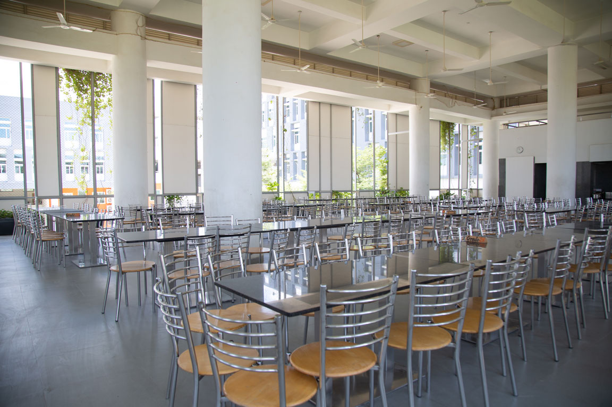
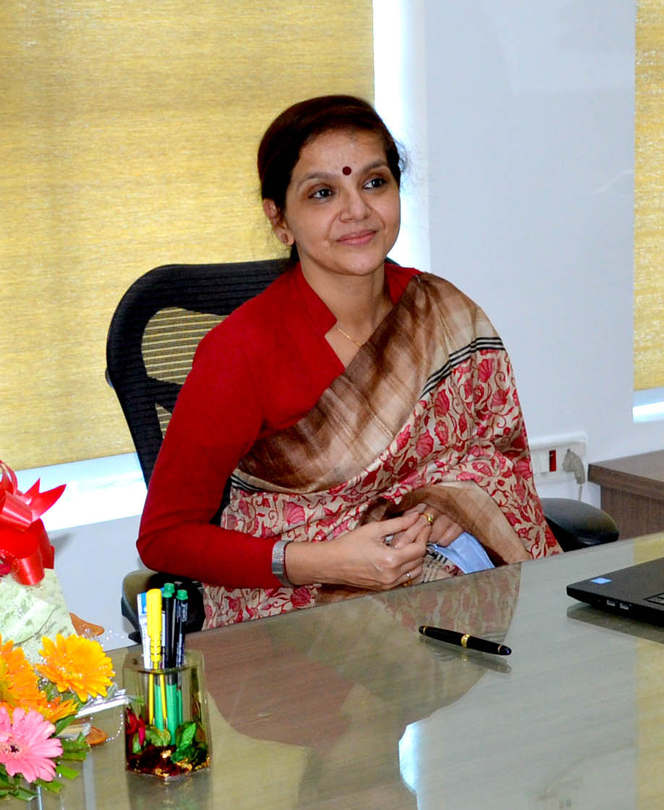

Campus Life

school picture
Was established in 2013
Birla Open Minds, offers a comprehensive solution for education that envelopes the individual's learning, right from the formative early years to K-12 schooling. Birla Open Minds encompasses wide - ranging interests in the sphere of high quality education with dedication to excellence. Our first Birla Open Minds School initiated its operations in 2010, and today, it has grown to 65+ Preschools and 55+ K-12 Schools throughout India.
school auditorium
Was build in 2014
An auditorium is the right place for any social, cultural, and educational activity in a school. An auditorium is also known as an assembly hall. It is an essential part of a school as it has multiple uses to organize celebrations and recreational activities and Birla Open Minds provides High-fi services of ausitorium.
school ground and river
Was build in 2016
Introducing Birla Open Minds Residential School, an ambitious educational institution nurturing future-ready students. 01. Entrance Gate 02. Security Check Post 03. Dedicated Cricket Ground 04. A/C Office 05. Nature Walk Road 06. Academic Block & Hostel Block 07. Chinneru River 08. Nature Classrooms 09 .Cycling Track 10. Performance Stage 11. Kitchen & Dining Hall 12. 3 Volleyball Courts 13. Skating Rink 14. 3 Basketball Courts 15. 2 Badminton Courts 16. Farming 17. Athletic ground, Rifle Shooting & Football Ground 18. Running Track
School Achievements
Won First Prize in Inter House Chess Competition
Birla Open Minds International School, Guindy hosted the Inter-House Chess competition to provide a platform to its students to improve their logical thinking, analytical reasoning and problem-solving. Young budding students from Grades 3 to 10 participated in the Inter-House Chess Competition on 21st June 2019. As the day of the Chess tournament approached 77 highly enthusiastic students were all geared up to beat their opponents in nail-biting matches. The students were categorized into 4 groups: Group 1 for Sub – Juniors from Grade 3, Group 2 for Juniors from grades 4 and 5, Group 3 for Seniors from Grades 6 and 7 and Group 4 for Super Seniors from Grades 8, 9 and 10. Each group played three rounds. The participants followed the Fide Swiss Rapid Rules and were judged by the Chief Arbiter of the district. It was indeed quite heart-warming to see the children playing their moves like stalwarts with rapt concentration and collected demeanour.
Won Second Prize in Inter House Skating Competition
Roller skating is a sport, an art form, a lifestyle, and a culture. Roller skating is the perfect way to combine fitness with fun. It helps people develop a fitness habit with a sport that is enjoyable for all ages. An Inter-House Skating Competition was held on Friday, 7th May, 2019 for the students of Classes II to V and Classes VI to IX at Birla Open Minds International School. The top-notch skaters of Birla Open Minds International School gave stellar performances and brought laurels to their respective houses. The students were able to portray their talent. They showcased an energetic and enthusiastic performance which was applauded by the audience.
Won First Prize in Inter House Science Experiment Competition
Birla Open Minds International School continually endeavours to make academics fun and interesting for the students. Keeping this idea in mind, the Inter-House Competition on “Innovative Science Models” was organized at 8 a.m. on 29th of July 2021, for the students of classes VI-VIII. This competition began by welcoming our Principal cum Director Sir, Mr. Reinhold Michalak, without whose incredible support nothing is possible. The activity incharges and the anchors welcomed our esteemed Judges, Mr. Vivek Kumar, our deputy HM and the head of Biology department, Mr. Kanhaiya Sir, the head of Chemistry department and Mr. Satish Chandra, a parent who is working as an Engineer in ACME Solar. The students of all the four houses put forth their innovative ideas by presenting their improvised models. Team members of all the houses participated enthusiastically and answered the questions asked by judges. Participants accepted the feedback as a positive approach. The event was concluded by the motivational and inspiring words by our dynamic Principal cum Director Sir, Mr Reinhold Michalak. He has always been an inspiration to all of us. Model making activity brought forth exploratory experiences, encouraged creative thinking and promoted psychomotor skills among students through self-designed models which made learning and retention more profound and strong. The students collected eco-friendly materials to make their models. This activity gave them an opportunity to showcase their talent.
What's New
-
New School Canteen
Breakfast and Lunch are provided to all the students and staff members of the school. Nutritious , vegetarian and homely food comprising of both South Indian and North Indian cuisine is served to the students. The food is cooked in house in the state of the art modern kitchen . The diet plans and meals are guided by the school's nutritionist keeping in mind the mother's trust about the child's health. Dining of student is always under the supervision of a teacher.
Implemented Online Attendence Management System

An attendance management system is used by an organization to track staff's time and attendance details. You can save time and effort by calculating your employee's working hours with an accurate attendance management system. Attendance management system keeps track of daily attendance, working hours, breaks, login, and logout time. It prevents staff's time theft. An attendance management system integrates all attendance devices such as smart cards, biometric, and facial recognition devices in real-time. Birla Open Minds Student attendance management software allows schools of all sizes to manage various attendance requirements. This system makes it easy to create daily attendance reports, absentee lists, letters and other documents almost effortlessly. Student attendance system helps teachers to mark online attendance of students during class & reduce manual work. It is used to track student's attendance, absentee record, attendance history & other related documents. Student attendance software allows you to record & manage daily student attendance to speed up the daily attendance process. Online attendance management system enables school administrators to record, manage & compile daily student attendance data. Along with student attendance, this software also allows teachers to generate 100% accurate student attendance reports.
